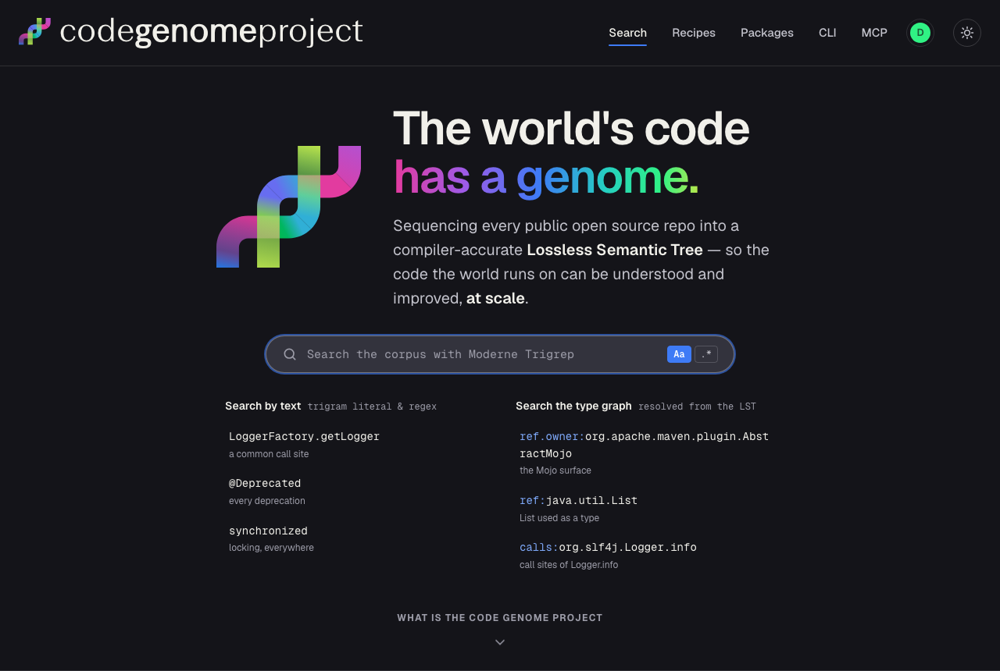
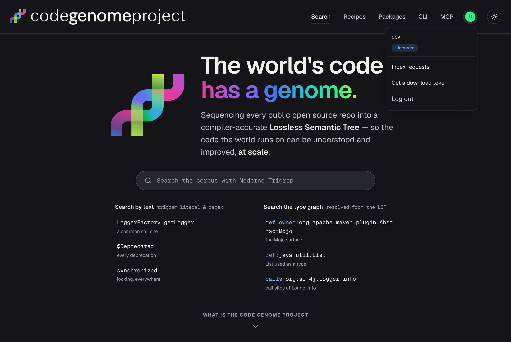

The same screens arranged as the actual paths a user takes. Screens repeat between flows on purpose — that's the point, to see each journey end to end. Every panel is the real server-rendered page; scroll a panel to see the rest of it.
Theme follows your OS light/dark setting. Part of the codegenome-auth prototype.
A person's first social sign-in. They land on the token gate, then either grab a token (3a) or skip straight to the home page (3b). This is the only flow where the gate appears.

Home page (no token)Gate has two variants by region (auto-detected): opt-in (checkbox — EU & unknown) vs notice (no checkbox — US). Same token either way. Skip for now also sets a marker so the next sign-in skips the gate (Flow B).
Any social sign-in after the first. The gate is skipped entirely — a plain login that lands on the home page.

Home page — profile menu openGetting a token as a returning user: they aren't sent to the gate on sign-in, but the existing Get a download token link in the profile dropdown (shown above) still takes them to the token flow whenever they want one.
"Returning" = a browser that already saw the gate once (a persistent cgp_returning cookie). Clearing it, or a new browser, shows Flow A again.
Customers given a Moderne username & password sign in with those instead of GitHub/Google, and land on the token management page (generate / list / revoke). No gate.
Generating reloads this same page with the new token revealed once + Maven/Gradle/CLI snippets above the list. This is the closest thing today to your reference screenshot — Phase 2 generalizes it to social-login users and adds token names + expiry.